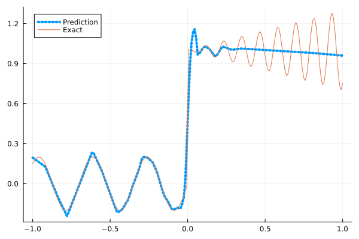
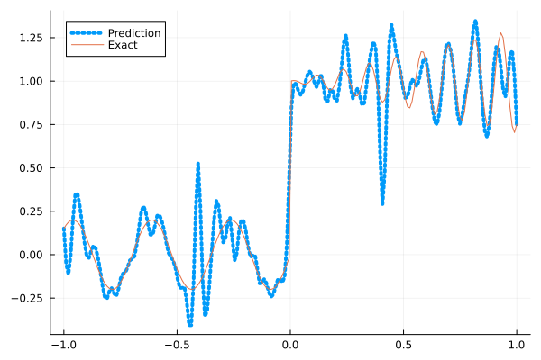
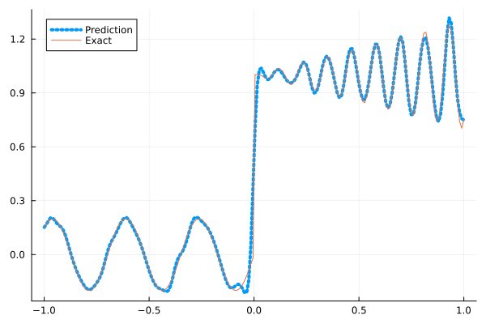
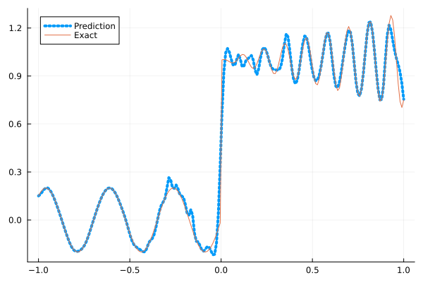
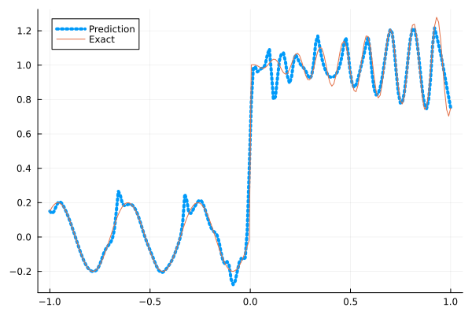

Fitting a nonlinear discontinuous function
This example is taken from here. However, we do not use adaptive activation functions. Instead, we show that using suitable non-parametric activation functions immediately performs better.
Consider the following discontinuous function with discontinuity at $x=0$:
\[u(x)= \begin{cases}0.2 \sin (18 x) & \text { if } x \leq 0 \\ 1+0.3 x \cos (54 x) & \text { otherwise }\end{cases}\]
The domain is $[-1,1]$. The number of training points used is 50.
Import packages
using Lux, Sophon
using NNlib, Optimisers, Plots, Random, StatsBase, ZygoteDataset
function u(x)
if x <= 0
return 0.2 * sin(18 * x)
else
return 1 + 0.3 * x * cos(54 * x)
end
end
function generate_data(n=50)
x = reshape(collect(range(-1.0f0, 1.0f0, n)), (1, n))
y = u.(x)
return (x, y)
endgenerate_data (generic function with 2 methods)Let's visualize the data.
x_train, y_train = generate_data(50)
x_test, y_test = generate_data(200)
Plots.plot(vec(x_test), vec(y_test),label=false)
Naive Neural Networks
First, we demonstrate that naive, fully connected neural nets are not sufficient for fitting this function.
model = FullyConnected((1,50,50,50,50,1), relu)Chain(
layer_1 = Dense(1 => 50, relu), # 100 parameters
layer_2 = Dense(50 => 50, relu), # 2_550 parameters
layer_3 = Dense(50 => 50, relu), # 2_550 parameters
layer_4 = Dense(50 => 50, relu), # 2_550 parameters
layer_5 = Dense(50 => 1), # 51 parameters
) # Total: 7_801 parameters,
# plus 0 states.Train the model
function train(model, x, y)
ps, st = Lux.setup(Random.default_rng(), model)
opt = Adam()
st_opt = Optimisers.setup(opt,ps)
function loss(model, ps, st, x, y)
y_pred, _ = model(x, ps, st)
mes = mean(abs2, y_pred .- y)
return mes
end
for i in 1:2000
gs = gradient(p->loss(model,p,st,x,y), ps)[1]
st_opt, ps = Optimisers.update(st_opt, ps, gs)
if i % 100 == 1 || i == 2000
println("Epoch $i || ", loss(model,ps,st,x,y))
end
end
return ps, st
endtrain (generic function with 1 method)Plot the result
@time ps, st = train(model, x_train, y_train)
y_pred = model(x_test,ps,st)[1]
Plots.plot(vec(x_test), vec(y_pred),label="Prediction",line = (:dot, 4))
Plots.plot!(vec(x_test), vec(y_test),label="Exact",legend=:topleft)Epoch 1 || 3.6656577345140433
Epoch 101 || 0.02340764480462596
Epoch 201 || 0.015306585723645632
Epoch 301 || 0.014729160550449944
Epoch 401 || 0.013632406743183178
Epoch 501 || 0.01300607750689776
Epoch 601 || 0.012738023901805015
Epoch 701 || 0.012379971841803936
Epoch 801 || 0.011591474815162367
Epoch 901 || 0.010086129009043647
Epoch 1001 || 0.00850436975015808
Epoch 1101 || 0.007814769562575128
Epoch 1201 || 0.007643382582651456
Epoch 1301 || 0.007619503924445095
Epoch 1401 || 0.007616872546975151
Epoch 1501 || 0.007592675014821546
Epoch 1601 || 0.007548343329967555
Epoch 1701 || 0.007540539668425577
Epoch 1801 || 0.007548213771843433
Epoch 1901 || 0.007518669043561419
Epoch 2000 || 0.0075011626195519935
8.490473 seconds (15.53 M allocations: 1.618 GiB, 3.73% gc time, 94.27% compilation time)
Siren
We use four hidden layers with 50 neurons in each.
model = Siren(1,50,50,50,50,1; omega = 30f0)Chain(
layer_1 = Dense(1 => 50, sin), # 100 parameters
layer_2 = Dense(50 => 50, sin), # 2_550 parameters
layer_3 = Dense(50 => 50, sin), # 2_550 parameters
layer_4 = Dense(50 => 50, sin), # 2_550 parameters
layer_5 = Dense(50 => 1), # 51 parameters
) # Total: 7_801 parameters,
# plus 0 states.@time ps, st = train(model, x_train, y_train)
y_pred = model(x_test,ps,st)[1]
Plots.plot(vec(x_test), vec(y_pred),label="Prediction",line = (:dot, 4))
Plots.plot!(vec(x_test), vec(y_test),label="Exact",legend=:topleft)Epoch 1 || 0.6086718190116904
Epoch 101 || 0.000504967622817201
Epoch 201 || 8.661411892155007e-6
Epoch 301 || 5.809957319772488e-8
Epoch 401 || 2.3085453483221298e-10
Epoch 501 || 2.096847016602166e-12
Epoch 601 || 2.395109715750493e-13
Epoch 701 || 7.789209742166635e-14
Epoch 801 || 3.7513612938053033e-14
Epoch 901 || 5.3767358744858834e-14
Epoch 1001 || 5.991280063286838e-14
Epoch 1101 || 4.555128804437043e-14
Epoch 1201 || 7.436281930860323e-14
Epoch 1301 || 5.0899810950417156e-14
Epoch 1401 || 4.456306628337595e-14
Epoch 1501 || 6.281211181818103e-14
Epoch 1601 || 7.677660845397565e-14
Epoch 1701 || 8.489776201938235e-14
Epoch 1801 || 6.893127680370973e-14
Epoch 1901 || 5.699940584944946e-14
Epoch 2000 || 5.896620090326566e-14
3.558797 seconds (7.28 M allocations: 1.222 GiB, 4.33% gc time, 81.77% compilation time)
As we can see the model overfits the data, and the high frequencies cannot be optimized away. We need to tunning the hyperparameter omega
model = Siren(1,50,50,50,50,1; omega = 10f0)Chain(
layer_1 = Dense(1 => 50, sin), # 100 parameters
layer_2 = Dense(50 => 50, sin), # 2_550 parameters
layer_3 = Dense(50 => 50, sin), # 2_550 parameters
layer_4 = Dense(50 => 50, sin), # 2_550 parameters
layer_5 = Dense(50 => 1), # 51 parameters
) # Total: 7_801 parameters,
# plus 0 states.@time ps, st = train(model, x_train, y_train)
y_pred = model(x_test,ps,st)[1]
Plots.plot(vec(x_test), vec(y_pred),label="Prediction",line = (:dot, 4))
Plots.plot!(vec(x_test), vec(y_test),label="Exact",legend=:topleft)Epoch 1 || 0.5525701355211065
Epoch 101 || 0.0054312133149143895
Epoch 201 || 0.003356236274595066
Epoch 301 || 0.0020323946526792317
Epoch 401 || 0.0013451781727785617
Epoch 501 || 0.0007926928222014896
Epoch 601 || 0.00040138859556647664
Epoch 701 || 0.00021625311297956572
Epoch 801 || 0.00013855276419544072
Epoch 901 || 9.644831028479701e-5
Epoch 1001 || 6.888362931029276e-5
Epoch 1101 || 5.026601368360515e-5
Epoch 1201 || 3.7913289547337754e-5
Epoch 1301 || 2.979761851368348e-5
Epoch 1401 || 2.4355025115219813e-5
Epoch 1501 || 2.0494569833645155e-5
Epoch 1601 || 1.7536078001094956e-5
Epoch 1701 || 1.5090722426194503e-5
Epoch 1801 || 1.2956756969134294e-5
Epoch 1901 || 1.1038440135953147e-5
Epoch 2000 || 2.148807630082816e-5
0.538134 seconds (1.14 M allocations: 891.068 MiB, 4.29% gc time)
Gaussian activation function
We can also try using a fully connected net with the gaussian activation function.
model = FullyConnected((1,50,50,50,50,1), gaussian)Chain(
layer_1 = Dense(1 => 50, gaussian), # 100 parameters
layer_2 = Dense(50 => 50, gaussian), # 2_550 parameters
layer_3 = Dense(50 => 50, gaussian), # 2_550 parameters
layer_4 = Dense(50 => 50, gaussian), # 2_550 parameters
layer_5 = Dense(50 => 1), # 51 parameters
) # Total: 7_801 parameters,
# plus 0 states.@time ps, st = train(model, x_train, y_train)
y_pred = model(x_test,ps,st)[1]
Plots.plot(vec(x_test), vec(y_pred),label="Prediction",line = (:dot, 4))
Plots.plot!(vec(x_test), vec(y_test),label="Exact",legend=:topleft)Epoch 1 || 0.684153251704409
Epoch 101 || 0.006539508890474912
Epoch 201 || 0.005579283881996391
Epoch 301 || 0.005068942448581934
Epoch 401 || 0.004665542375918912
Epoch 501 || 0.004331762877528752
Epoch 601 || 0.003329597029972976
Epoch 701 || 0.001354237665502906
Epoch 801 || 0.00010537956776574416
Epoch 901 || 2.9813228743866455e-6
Epoch 1001 || 4.322510123660392e-7
Epoch 1101 || 1.8245625036558975e-7
Epoch 1201 || 8.687011958602585e-8
Epoch 1301 || 3.425558541416381e-8
Epoch 1401 || 5.342663998683478e-7
Epoch 1501 || 5.142210388528744e-5
Epoch 1601 || 5.732660956260929e-9
Epoch 1701 || 1.5524821275030256e-6
Epoch 1801 || 1.8976833763688906e-6
Epoch 1901 || 2.6080242381626984e-5
Epoch 2000 || 1.0301760855258536e-6
3.270854 seconds (6.33 M allocations: 1.170 GiB, 4.29% gc time, 79.17% compilation time)
Quadratic activation function
quadratic is much cheaper to compute compared to the Gaussian activation function.
model = FullyConnected((1,50,50,50,50,1), quadratic)Chain(
layer_1 = Dense(1 => 50, quadratic), # 100 parameters
layer_2 = Dense(50 => 50, quadratic), # 2_550 parameters
layer_3 = Dense(50 => 50, quadratic), # 2_550 parameters
layer_4 = Dense(50 => 50, quadratic), # 2_550 parameters
layer_5 = Dense(50 => 1), # 51 parameters
) # Total: 7_801 parameters,
# plus 0 states.@time ps, st = train(model, x_train, y_train)
y_pred = model(x_test,ps,st)[1]
Plots.plot(vec(x_test), vec(y_pred),label="Prediction",line = (:dot, 4))
Plots.plot!(vec(x_test), vec(y_test),label="Exact",legend=:topleft)Epoch 1 || 0.6845508352548295
Epoch 101 || 0.006043750012820084
Epoch 201 || 0.005070798599709796
Epoch 301 || 0.0043295429576552915
Epoch 401 || 0.0033657584564990334
Epoch 501 || 0.002170168959105419
Epoch 601 || 0.0010988602562661748
Epoch 701 || 0.00038546644092799306
Epoch 801 || 0.00012607552539826175
Epoch 901 || 3.935149911381284e-5
Epoch 1001 || 1.0961110116493268e-5
Epoch 1101 || 2.6483281367482788e-6
Epoch 1201 || 6.118305697664556e-7
Epoch 1301 || 1.3645706309671507e-7
Epoch 1401 || 2.8192832835779055e-8
Epoch 1501 || 5.215979827035075e-9
Epoch 1601 || 8.5641297203061e-10
Epoch 1701 || 1.255105136309162e-10
Epoch 1801 || 1.7795647821403826e-11
Epoch 1901 || 3.007684655393883e-12
Epoch 2000 || 8.699542977108637e-13
2.944641 seconds (6.07 M allocations: 1.154 GiB, 4.01% gc time, 83.98% compilation time)
Conclusion
"Neural networks suppress high-frequency components" is a misinterpretation of the spectral bias. The accurate way of putting it is that the lower frequencies in the error are optimized first in the optimization process. This can be seen in Siren's example of overfitting data, where you do not have implicit regularization. The high frequency in the network will never go away because it has fitted the data perfectly.
Mainstream attributes the phenomenon that neural networks "suppress" high frequencies to gradient descent. This is not the whole picture. Initialization also plays an important role. Siren mitigates this problem by initializing larger weights in the first layer. In contrast, activation functions such as Gaussian have sufficiently large gradients and sufficiently large support of the second derivative with proper hyperparameters. Please refer to [1], [2] and [3] if you want to dive deeper into this.